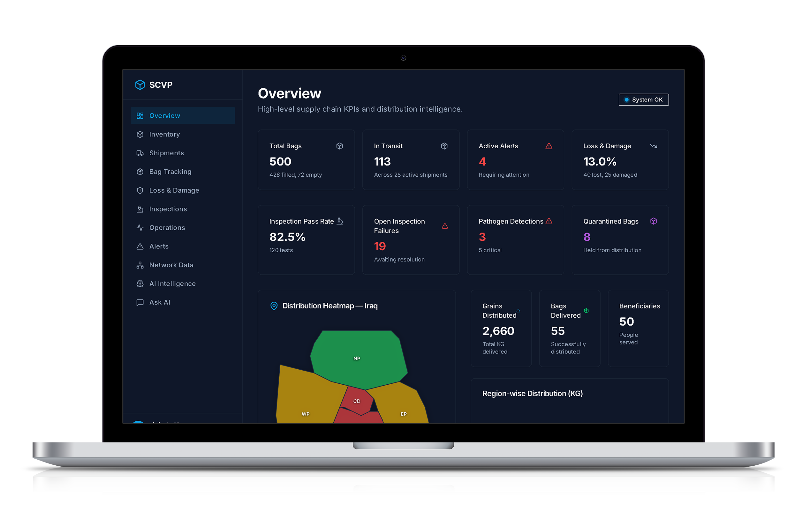
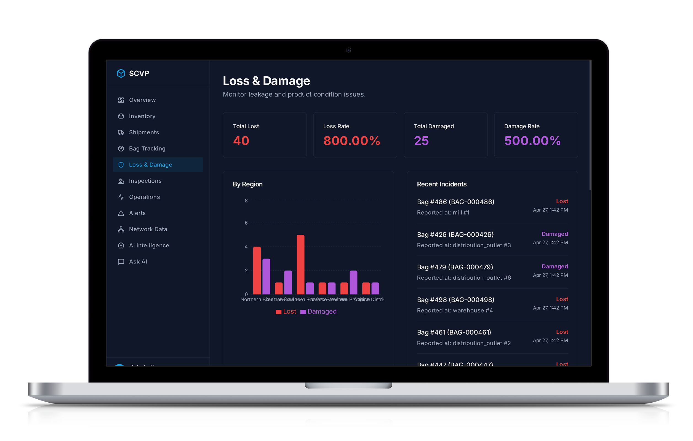
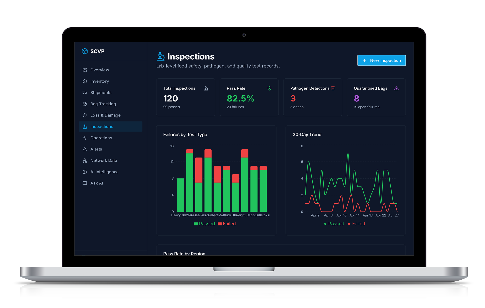

Supply Chain Visibility Platform for Food
Distribution
A bag-level supply chain visibility platform for food distribution
systems operated by governments and supported by humanitarian
organizations such as the World Food Programme (WFP) — digitizing and
tracking the movement of food grains from procurement to final
distribution.
Scope
Bag-Level Track and Trace
01 — Executive Summary
Transparency from farmer to beneficiary.
Section · 01 Overview
This document outlines the design and implementation of a
bag-level supply chain visibility platform for food
distribution systems operated by governments and supported by
humanitarian organizations such as the World Food Programme (WFP).
The platform aims to digitize and track the movement of food
grains from procurement to final distribution, ensuring
transparency, accountability, and efficiency
across the entire supply chain. A key focus is enabling automated
tracking mechanisms and AI-driven dashboards for high-level
stakeholders, including national and state-level commissioners.
02 — Objectives
Six commitments shaping every layer of the platform.
Section · 02 Goals
/ 01Enable end-to-end visibility of food grain movementVisibility
/ 02Track both empty bags and filled grain bags at the unit
levelTraceability
/ 03Reduce losses, leakages, and inefficienciesIntegrity
/ 04Minimize reliance on manual barcode scanningAutomation
/ 05Provide real-time dashboards for decision-makersInsight
/ 06Incorporate AI-based reporting and predictive insightsIntelligence
03 — Supply Chain Overview
Five stages, one continuous trail of accountability.
Section · 03 Flow
3.1 / Stage One
Procurement
Grains are procured directly from farmers. Initial aggregation
points may vary by country.
→
3.2 / Stage Two
Processing (Mills)
Grains are transported to mills (or equivalent facilities). At
mills, grains are processed and packaged into bags. Each bag is
tagged with a barcode or RFID tag.
→
3.3 / Stage Three
Central Warehousing
Bagged grains are transported to central warehouses. Bulk storage
and inventory management occur here.
→
3.4 / Stage Four
Regional Distribution
Goods are distributed from central warehouses to regional
warehouses and local storage facilities.
→
3.5 / Stage Five
Last-Mile Distribution
Bags are sent to distribution outlets and finally delivered to
beneficiaries.
→
04 — Core Functional Requirements
Every bag tracked. Every movement captured.
Section · 04 Capabilities
4.1 — Bag-Level Tracking
Unique identification of every bag — empty and filled — across its
full lifecycle.
Lifecycle tracking covers every state a bag can pass through, from
creation at the mill to return after use.
All five capabilities surface inside a single command center for
senior decision-makers.


07 — AI-Based Reporting & Intelligence
From raw scans to executive-ready intelligence.
Section · 07 Intelligence
01
7.1
Predictive Analytics
Demand forecasting by region
Stock replenishment recommendations
Seasonal supply planning
02
7.2
Anomaly Detection
Identify unusual losses or discrepancies
Detect potential fraud or diversion
Highlight abnormal movement patterns
03
7.3
Intelligent Alerts
Delayed shipments
Low stock levels
High damage rates
7.4 — Natural Language Reporting
Plain-language summaries for decision-makers.
“Region X has a 15% increase in losses this month.”
“Warehouse Y is nearing full capacity.”
05
7.5
Decision Support
AI-driven recommendations that translate data into action.
Optimize routes
Reallocate stock
Improve distribution efficiency
08 — Inspection Command Center
Where quality meets control.
Section · 08 Quality
/ 01Volume
128,420checks
Total Inspections
All inspections recorded across the selected period, ensuring
complete quality visibility from procurement to last-mile
distribution.
/ 02Compliance
96.4%pass rate
Pass Rate
Percentage of inspections meeting safety thresholds and quality
compliance standards across mills, warehouses, and field points.
/ 03Open
312unresolved
Open Failures
Unresolved inspection failures requiring action before the supply
chain can progress to the next custody handover.
/ 04Critical
47high-risk
Critical Failures
High-risk issues flagged for immediate intervention and strict
containment, escalated to senior commissioners in real time.
/ 05Biohazard
9contamination cases
Pathogen Detections
Detected contamination cases — including
Salmonella and E. coli — automatically
routed to quarantine workflows with full chain-of-custody
traceback.
Salmonella5
E. coli3
Listeria1

09 — Automation Strategy
Engineered to address limited manual capacity.
Section · 09 Strategy
8.1
Infrastructure Deployment
RFID gates at entry/exit points
Fixed scanners at mills and warehouses
Smart handheld devices for field staff
8.2
Smart Logistics Integration
Vehicle tracking systems
Automated shipment logging
Geo-fencing for location validation
8.3
AI-Assisted Scanning
Camera-based barcode recognition
Bulk scanning using computer vision
10 — Benefits
Five outcomes that change how food reaches people.
Section · 10 Impact
01
Transparency
Full visibility of every bag in the system.
9.1
02
Accountability
Clear tracking of responsibility at each stage.
9.2
03
Efficiency
Reduced manual effort. Faster operations.
9.3
04
Reduced Losses
Early detection of leakages and inefficiencies.
9.4
05
Data-Driven Decisions
Real-time insights for policymakers.
9.5
11 — Implementation Roadmap
From pilot to optimization, one phase at a time.
Section · 11 Timeline
01
Phase 1
Pilot
Select limited regions
Deploy core tracking and dashboard
02
Phase 2
Scale-Up
Expand to additional regions
Integrate AI capabilities
03
Phase 3
Optimization
Enhance automation
Improve predictive analytics
Continuous system refinement
11 — Conclusion
Transforming food distribution through traceability, automation &
intelligence.
The proposed supply chain visibility platform will transform food
distribution systems by enabling granular tracking, automation, and
intelligent decision-making. By combining bag-level traceability,
automated scanning technologies, and AI-powered dashboards, the system
will significantly improve transparency, reduce losses, and ensure
efficient delivery of food to beneficiaries.